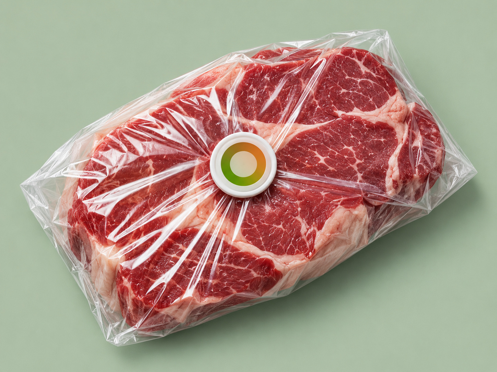

01. EMBALLER
Protéger l'aliment avec le film et placer la zone indicatrice vers l'extérieur.
Un geste simple pour mieux comprendre la fraîcheur.

CONCEPT COLORWRAPUn film protecteur, un petit capteur coloré, et une information lisible d'un coup d'œil.
ColorWrap associe un film alimentaire à base de biopolymères à une zone indicatrice contenant des pigments naturels de chou rouge. Cette zone réagit à certains gaz liés à l'altération des aliments, sans contact direct avec eux.
Protéger l'aliment avec le film et placer la zone indicatrice vers l'extérieur.
Observer la couleur de l'indicateur qui réagit aux composés volatils.
Comprendre le signal et retrouver nos conseils de conservation sur le site.
Découvrez les trois couleurs du capteur grâce à notre démonstration interactive.
Le capteur utilise des anthocyanes, des pigments présents dans le chou rouge. Ces pigments peuvent changer de teinte lorsque leur environnement chimique évolue.
Explorez les trois états envisagés pour ColorWrap. L'icône et le texte accompagnent toujours la couleur pour rester compréhensibles par le plus grand nombre.
Aucun changement significatif détecté par l'indicateur dans cette simulation.
Un indicateur de petite taille, composé de matériaux sélectionnés pour leur rôle complémentaire.
Une matrice de biopolymère, par exemple de l'alginate de sodium avec du glycérol, intègre des anthocyanes de chou rouge. Le changement de pH associé aux gaz d'altération peut modifier leur teinte.
Pourquoi le chou rouge ? Ses pigments naturels, les anthocyanes, sont sensibles au pH. Le projet étudie leur extraction, leur stabilité et leur intégration dans un indicateur séparé de l'aliment. D'autres matériaux, comme le chitosane, pourront être comparés.
Parce qu'un emballage intelligent ne suffit pas : les bons réflexes en cuisine font toute la différence.
Transportez rapidement les produits frais jusqu'au réfrigérateur et suivez les températures indiquées sur leur emballage.
La DLC (« à consommer jusqu'au ») relève de la sécurité sanitaire ; la DDM concerne surtout la qualité du produit.
Évitez les contaminations croisées : séparez les aliments crus, les produits cuits et les aliments prêts à manger.
Utilisez des légumes encore consommables, lavés et préparés correctement, pour un velouté de saison.
Faites revenir oignon et légumes coupés, ajoutez du bouillon, laissez cuire puis mixez. Assaisonnez à votre goût.
Accommodez des légumes frais encore sûrs avec des pâtes, de l'ail et quelques herbes.
Faites cuire les pâtes. Faites sauter les légumes dans l'huile d'olive, ajoutez les pâtes et les herbes, puis servez.
Donnez une seconde vie au pain rassis non moisi pour accompagner salades et soupes.
Coupez le pain en dés, mélangez avec un peu d'huile et des aromates, puis faites dorer au four.
Vérifiez les placards et le réfrigérateur avant d'acheter pour éviter les doublons.
Congelez les aliments adaptés lorsqu'ils sont encore sûrs, en respectant les indications de conservation.
Placez les produits à consommer en priorité devant les autres dans le réfrigérateur.
Ne consommez jamais un aliment suspect ou ayant dépassé sa DLC, même si un indicateur reste vert. ColorWrap est un concept en cours d'étude.
Nous imaginons un emballage qui associe information sur la fraîcheur et réflexion sur l'impact des matériaux. Chaque promesse devra être démontrée par des tests avant toute commercialisation.
Découvrir notre démarcheÉtudier des formulations biosourcées et vérifier les conditions réelles de compostage et de sécurité.
Explorer l'utilisation d'anthocyanes et la récupération de résidus de chou rouge auprès d'acteurs locaux.
Limiter sa zone à environ 2 cm² maximum pour réduire la quantité de pigments utilisés.
ColorWrap est né d'une question : et si l'emballage pouvait nous aider à mieux comprendre l'évolution de la fraîcheur des aliments, tout en limitant notre dépendance aux plastiques conventionnels ?
Notre démarche rassemble des idées de matériaux, de chimie, d'usage et de numérique. Nous privilégions, autant que possible, des pistes d'approvisionnement local et de valorisation de ressources existantes.
Définir le film, ses usages et ses fonctionnalités.
Comparer les biopolymères et extraire les anthocyanes.
Mesurer réponse colorée, stabilité, migration et conservation.
Vérifier compostabilité, accessibilité et faisabilité industrielle.
Non. Le concept vise à signaler certaines évolutions chimiques liées à l'altération. Il ne détecte pas tous les risques microbiologiques et ne doit pas remplacer la DLC, les consignes de conservation ou les règles de sécurité alimentaire.
Le chou rouge contient des anthocyanes : des pigments naturels dont la couleur varie selon le pH. L'objectif est d'étudier leur capacité à réagir indirectement aux amines volatiles émises lors de l'altération de certaines viandes et produits de la mer.
Les premiers usages envisagés concernent le poisson, les fruits de mer, la volaille et certaines viandes, car leur altération peut produire des composés volatils basiques. L'adaptation à chaque catégorie nécessitera des essais spécifiques.
ColorWrap est pensé pour un usage unique. La compostabilité est un objectif du projet et non une certification acquise. La tenue du film, sa conservation, les migrations éventuelles et sa fin de vie devront faire l'objet d'études.
Le site associe déjà chaque état à un symbole et un texte, avec une lecture vocale facultative dans la démonstration. Une lecture future par téléphone fait partie des pistes d'accessibilité à explorer, mais elle n'est pas encore disponible.
Vous êtes curieux, étudiant, professionnel ou partenaire potentiel ? Préparez un message pour échanger autour du concept ColorWrap.
Générez un message que vous pourrez copier dans votre messagerie.